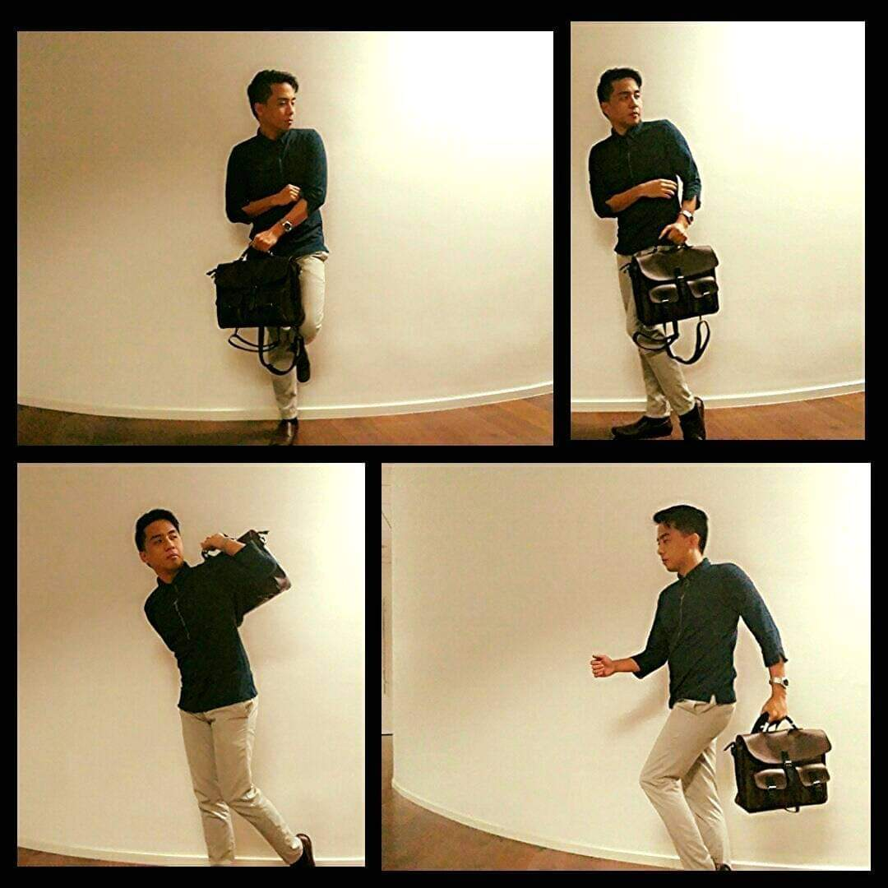

As a passionate advocate of technology, I find my calling in both the dynamic field of Robotic Process Automation (RPA)
and the critical domain of Software Quality Assurance (QA). In the ever-evolving landscape of technology,
I have embarked on a journey that has led me to excel in multiple domains. Whether it's as an RPA Developer, automating business processes
for efficiency, or as a Software QA Engineer, ensuring the quality and reliability of software applications,
I am committed to leveraging technology to drive change, solve complex problems, and create value for organizations and individuals.
RPA Expertise
- RPA Platform: Robot Framework.
- Process Automation: Orders and Payment Validation, Design Order Processing, Data Extraction.
- Workflow Automation: Documents and Outline the Robot workflow.
- Scripting and Coding: Built Automation using Robot Framework and Python.
- Integration: Integrated systems API for seamless data flow.
SQA Expertise
- Methodologies: Automation, Manual, Regression, Functional, Performance, and API Testing.
- Test Automation: Selenium.
- Bug Tracking: Jira, Trello, and Azure
- QA Processes: analyzing requirements, planning, designing and executing tests, managing defects, performing regression, security, and usability testing,
automating where possible, integrating with CI/CD pipelines, documenting results, monitoring post-release, and continuously improving processes to ensure high-quality software.
